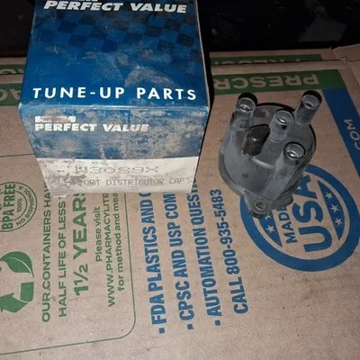
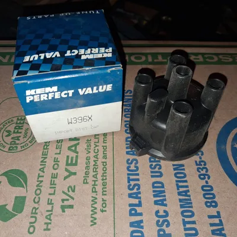
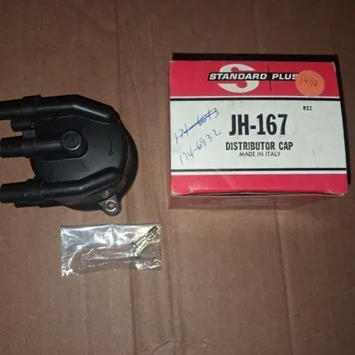
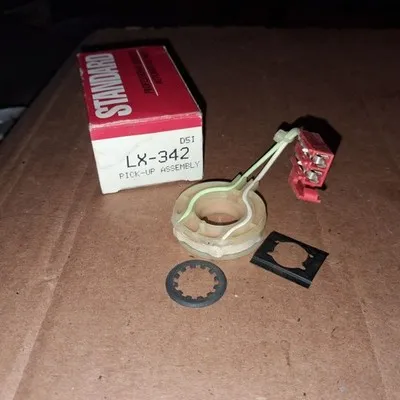

Distributor Rotors
1970-1995 KEM W292X Distributor Rotor NOS Geo Tracker Subaru 1800 Toyota Corolla
W292X
Fits 1989-1995 Geo Tracker · 1971-1979 Toyota Corolla (453 listed)
$13.99
View details19 parts whose listing names at least one Geo vehicle, mostly ignition & tune-up, engine parts and transmission & drivetrain. Fit depends on year, model and engine, so check the full vehicle list on each part page or message us before you buy.
19 parts
Online checkout through Square. Ships from Carbondale, PA, or pick up by confirmed appointment only. Fitment question? Message us.
W292X
Fits 1989-1995 Geo Tracker · 1971-1979 Toyota Corolla (453 listed)
$13.99
View details
W3089X
Fits 1989-1997 Geo Metro · 1998-2000 Chevrolet Metro (53 listed)
$17.99
View details
W396X
Fits 1989-1994 Geo Tracker · 1977-1987 Subaru Standard (161 listed)
$14.99
View details
W2002
Fits 1989-1997 Geo Prizm · 1989 Geo Spectrum (340 listed)
$14.99
View details
14082
Fits 1989-1994 Geo Metro · 1996-1997 Geo Tracker (2063 listed)
$12.99
View details
33479
Fits 1992-1993 Geo Storm · 1999-2004 Ford Mustang (817 listed)
$15.99
View details
33779
Fits 1989-1997 Geo Tracker · 1986-1990 Ford Bronco II (794 listed)
$14.99
View details
CV5865
Fits 1989 Geo Spectrum · 1985-1988 Chevrolet Spectrum (54 listed)
$29.99
View details
223535
Fits 1989-1997 Geo Metro · 1989-1991 Chevrolet Sprint (210 listed)
$19.99
View details
DR-186
Fits 1990-1993 Geo Storm · 1985-1995 Chevrolet Camaro (1746 listed)
$32.99
View details
66-1191
Fits 1989-1997 Geo Tracker · 1988-1991 Honda CRX (401 listed)
$29.99
View details
JH-167
Fits 1992-1997 Geo Metro · 1994-2000 Pontiac Firefly (69 listed)
$31.99
View details
JH-71
Fits 1989-1994 Geo Tracker · 1976-1978 Toyota Celica (125 listed)
$16.99
View details
JH-72
Fits 1989-1994 Geo Tracker · 1976-1979 Toyota Corolla (155 listed)
$21.99
View details
JR-75
Fits 1989-1995 Geo Tracker · 1971-1979 Toyota Corolla (495 listed)
$14.99
View details
JR101
Fits 1989-1997 Geo Prizm · 1989 Geo Spectrum (429 listed)
$17.99
View details
LX-342
Fits 1990-1993 Geo Storm · 1992-1994 Chevrolet Suburban (3000 listed)
$19.99
View details
PS160
Fits 1989-1997 Geo Metro · 1989-1997 Geo Tracker (472 listed)
$19.99
View details
TS-106
Fits 1989-1992 Geo Prizm · 1984-1993 Toyota Corolla (97 listed)
$29.99
View details